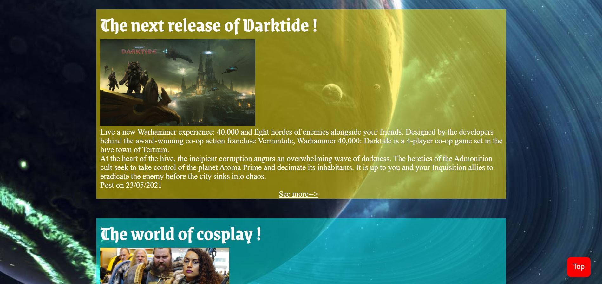

Projet Rogal Dorn

Le projet Rogal Dorn est mon projet de fin d'année 1. Un site composé de plusieurs pages devant résumer la vie d'un personnage de fiction. Lors de ce projet j'ai pu utiliser presque toutes les technologies que je conaissait à l'époque. Une expérience tres enrichissante.
